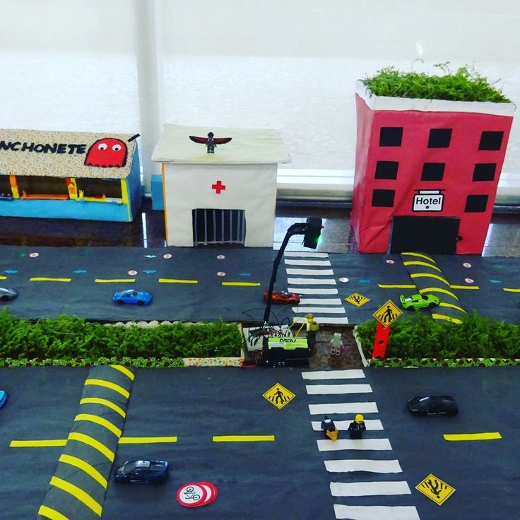
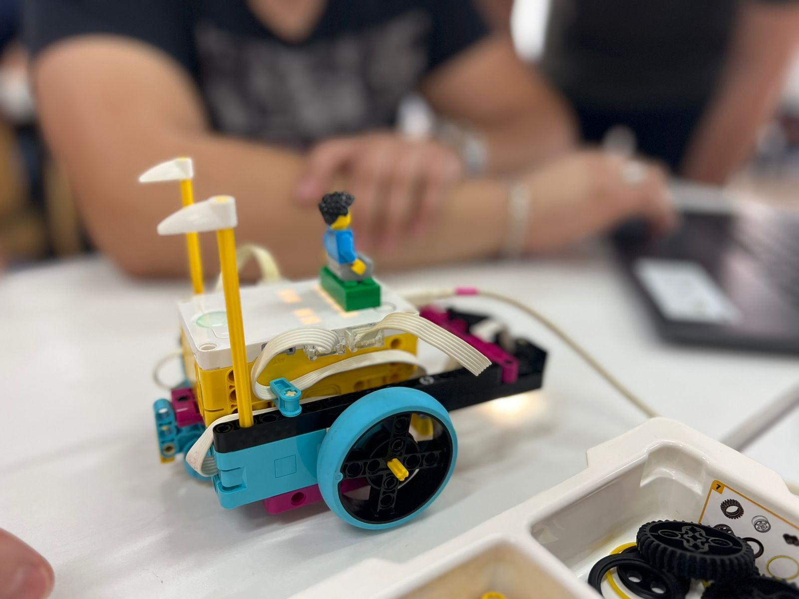

Este site tem como objetivo divulgar os projetos desenvolvidos na disciplina de Programação no itinerário formativo (IFA) Matemática


A acessibilidade visual refere-se à capacidade de tornar informações visuais acessíveis a todas as pessoas, independentemente de suas limitações visuais. Isso inclui a criação de designs e conteúdos que possam ser facilmente compreendidos por pessoas com deficiência visual, como cegueira ou baixa visão.
A acessibilidade visual envolve a adaptação de ambientes, tecnologias e conteúdos para garantir a autonomia, inclusão e segurança de pessoas com cegueira ou baixa visão. Ela se divide principalmente em três áreas de atuação: digital, arquitetônica e comunicacional
A produção de maquetes voltadas para a educação no trânsito e mobilidade é uma importante ferramenta pedagógica,
A acessibilidade visual é essencial para garantir que todos os usuários tenham igualdade de acesso à informação na internet. Ao tornar os conteúdos visuais acessíveis, as empresas podem alcançar um público mais amplo e demonstrar seu compromisso com a inclusão e diversidade.
20 Ideias de Projetos Para Desenvolvedores